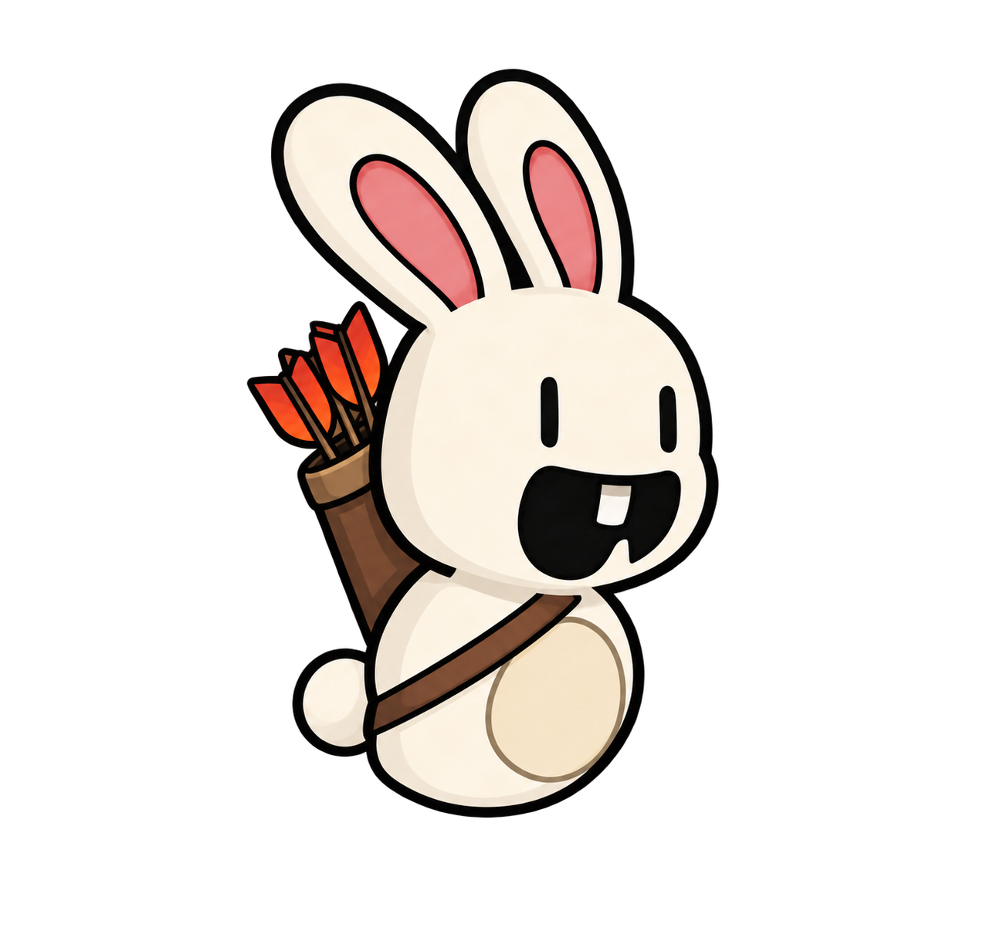
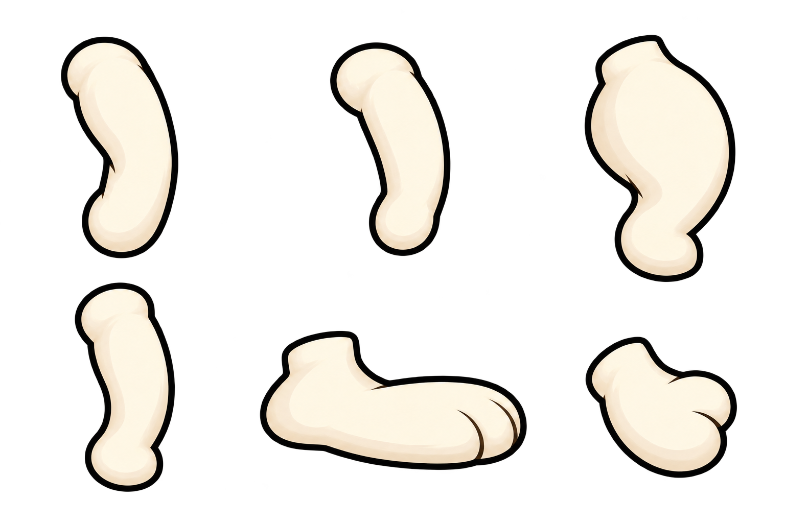

Painted paws, running and jumping
The bunny now uses painted arms, legs and paws with the original cream shading and hand-drawn outlines. The quiver stays attached through walking, running, takeoff and landing. This is a separate artwork preview before game integration.
Four poses for each leading leg · equal time for both legs.
Running, then jumping…
Each leg takes a turn in front. The opposite arm swings forward.
Gather, stretch and land. Quiver follows the back through each bound.
Loading both animation drafts…
Eight upright poses: four led by each leg
These are equally spaced moments from the animation above. Each pose gets the same amount of time. The cream leg and shaded leg take turns; their arms swing in opposition.
Takeoff, flight and landing
Inspect the painted source artwork
The upright bunny’s limbs move through the same alternating stride, using painted cutouts instead of ellipse-shaped placeholders.

